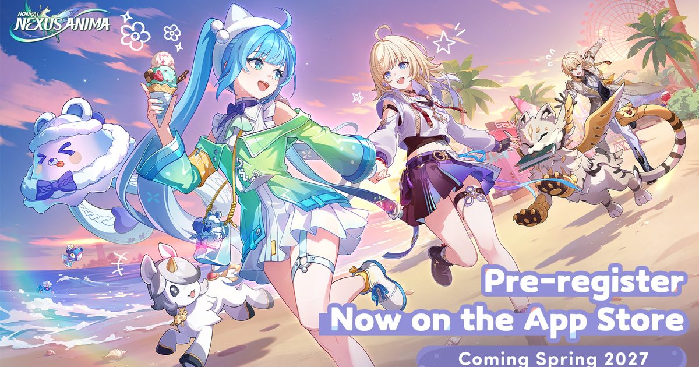

2026-11-05 · 商业化深读

11 月 5 日 12:00，米哈游放出一支 PV，叫《缘汽一下》。片子里没有游戏画面，只有一个叫「缘汽」的运动饮料： 有官网、有配料表、有保质期、有建议零售价 5 元，广告词是「随时随地，来瓶缘汽」。 片尾一行小字——本片由弗莱明共同体呈现，特别鸣谢路易斯·弗莱明·Y 女士的鼎力支持。 连「幸福测试」的招募公告里都老老实实写了一句「感谢缘汽对本次测试的大力支持」。
广告是假的。消息是真的：2027 年春季公测，11 月 25 日开启限量计费删档「幸福测试」（PC / 安卓 / iOS / 云游戏）， 招募窗口 11 月 5 日 12:00 到 11 月 22 日 09:59，测试期付费按规则返还到同一米哈游通行证账号。 到当晚八点，这支片子 244 万播放、10.2 万赞、7036 条评论，最高赞只有四个字：春天见。
米哈游旗下十几个官方号排队来「喝饮料」——星铁的帕姆、崩坏 3 的爱酱、崩坏学园 2、未定事件簿、绝区零，一个不落。 这一幕值得单独说：这是一家过去六年最不愿意在公开场合谈「价格」的公司，第一次把商业规则包装成消费品广告来讲。 而这支假广告里最值钱的词，其实不是片尾的「春天」，是前面那句「建议零售价」。
把官宣做成假广告，不是第一次有人干，但在米哈游这儿是第一次，而且选在这个项目上格外有意思。 《崩坏：因缘精灵》是崩坏 IP 的第五款产品，2027 年正好是 IP 十五年（从 2012 年 12 月的《崩坏学园》算起）， 带队的是《崩坏：星穹铁道》制作人、崩坏 IP 制作人蒋大卫，弗兰、阿鸡这些系列老人也都在组里。 换句话说，这不是一次试水，是主力部队。
主力部队出场，用的却是一套「不像自己」的语言。 这不是审美选择，是策略选择：抽卡规则本质是合同条款，写成公告就是一张价目表，写成广告就变成了一个「品牌」。 当天真正被讨论的其实不是 PV 拍得多好，而是卡池规则里那三条——它们才是这次发布会的正文。
先把原文摊开。这次公开的商业化只有三条，但三条都动在骨头上：
① 在「心象·限时结缘」与「精灵·限时结缘」中，首次获得的 5 星心象或精灵，必定为当期限定； ② 首次获得当期限定心象时，可免费领取对应的同行精灵； ③ 玩家等级 ≥ 40 级，可领取 5 星心象「刃」，首次获得该心象时同样免费领取同行精灵「布雷多格」。
这里有一个几乎所有中文快讯都写漏、但决定了这套规则性质的边界： 「首金不歪」只覆盖每个限定池的第一次出金。 第一次之后的五星，仍然回到米家那套大小保底逻辑——也就是说，你抽第二个、第三个 UP 时，概率学照旧。 所以它不是「取消歪」，它是「把第一次的赌注整个拿走」。
这两句话差别很大。如果是取消歪，那是全面降价，营收模型要重写； 如果只拿走第一次，那是精准切除「从 0 到 1」这一段——也就是新玩家、回流玩家、以及每个版本的「我要不要入这个角色」那一次决策。 这一段恰恰是转化率最低、挫败感最高、最容易让人直接关掉游戏的一段。
按米家既有保底参数粗算（软保底约 62 抽、硬保底 90 抽，出金后 50% 为当期 UP，此处为估算，非官方数据）： 旧规则下拿到第一个 UP 的期望在 90 抽上下；新规则下直接落到 62 抽上下。 再把「0+1」算进来——过去是角色池与专武池各抽一次，两个池子的保底各自计算，合计期望接近 170 抽；现在合成一个 SKU，62 抽上下拿走角色加对应精灵。 这不是打七折，这是把「一套完整体验」的入场价，压到了原来的三分之一左右。
第三条更狠：40 级白送五星「刃」和他的精灵「布雷多格」。 把这三条叠在一起看，官方实际上把「你的第一个五星」的标价改成了 0。 对于一款 2027 年才上线的游戏，这个动作的意图很清楚：先让所有人都拥有一套能打的东西，再谈后面的事。
还有一处细节不在卡池里，但同样说明问题：这是一次「计费删档」测试。 计费测试要测的从来不是「玩家愿不愿意付钱」——愿意付钱的人在删档测试里本来就会付。 它要测的是付完之后还剩多少：付费点分布、首充转化、以及「返还」这个设计能不能把测试期的付款变成一笔预约金。 官方明确写了按规则返还到同一通行证账号，这句话的作用是给付费降压——你花的钱不是消费，是押金。
当天被写得最多的一句是「米哈游良心了」。这个判断太便宜了，而且顺序反了。
同一次测试里还上线了另一个东西：「因缘斗技场」。 8v8 自走棋底子，排位、段位、赛季、赛场商店、晋阶嘉奖一整套，二测时只有好友对战，这次正式搬上台面。 自走棋这个品类的强度，直接由「你手里有哪些棋子」决定。而在这款游戏里，棋子就是精灵。
于是因果链就很清楚了：如果精灵贵，排位立刻变成付费墙；要让排位成立，就必须先把棋子变便宜。 绑定角色与精灵、首金必中、40 级送五星，这三条的真实功能不是让利，是给 PVP 发许可证。 你不能一边开天梯，一边让天梯的胜负由抽卡记录决定——那会被社区在第一个赛季就算清楚，然后整个竞技系统的公信力一次性烧掉。
反过来看，这也解释了为什么这套方案「看起来像降价，其实是结构性调整」： 它把付费重心从「能不能玩到」推到了「玩得多细」。代价也很直接—— 单个玩家的付费上限被压低，压力被转移到后面。 后面怎么补？官方这次一个字没说。参照站内 10 月 31 日对《崩坏：星穹铁道》4.7「奇缘星魂」的拆解，米家对「老资产再定价」这件事已经很熟练： 不给强度加价，就只好在别处加价。
所以我们倾向于一个偏冷的判断：《因缘精灵》接下来的收入补口，大概率不在精灵强度上，而在「外观与栖居」上—— 异色、栖息地、房车、都市里的那些「1:1 参照现实生活」的店铺与天气。 这不是猜测，是它自己把玩法往那儿铺的：三测新增雨天、昼夜、栖息地等级、店铺主题，这些东西都不影响战力，但都影响「我想不想住在这儿」。
同一条公告里还有一句容易被忽略的话：精灵没有个体值差异，也没有圣遗物那一类随机词条，抓到即是完全体。
这句话放在捉宠品类里是动祖坟的。宝可梦三十年来的核心循环，一半在「抓」，一半在「刷」——个体值、性格、球种、闪。 你抓到的那只和别人的那只不一样，这件事本身就是内容。 《因缘精灵》把这一层整个删掉，等于承认：手游玩家不会为「我这只比你的好 3%」刷两百小时。
那稀缺性去哪儿了？它搬到了「见过」这一层： 异色形态（Chromatic）、幼年体（抓到小的、养大了才是完全体）、图鉴收集（二测约 83 种）， 以及由栖息地吸引来的稀有精灵、由游戏内社交平台推送的异色出没线索——官方原话是让玩家「抬头就能看见」。
这是一次很清楚的置换：从「数值稀缺」换成「遇见稀缺」。 数值稀缺由玩家自己刷出来，官方只能调概率；遇见稀缺由地图、天气、时间、活动决定，官方可以随时开一扇窗。 前者留住的是刷子，后者留住的是逛的人。
风险也在这里。83 种图鉴对一个「以收集为核心」的游戏来说不算厚——能不能玩半年，取决于更新速度，而不是首发数量。 而「抬头就能看见」这句话，本质上是把「稀有」这个词的门槛降下来了：稀有变成可被安排的事件，惊喜也就变成了日程表。
8.2 / 10（前瞻，未上手三测）。 加分给「敢动自己最赚钱的那道闸门」和「把商业规则当成内容来发布」； 扣分给两个没回答的问题：83 种精灵的内容密度，以及「一键抄阵容码」与「排位竞技」能不能同时成立。
最高赞评论是「春天见」，不是任何一条卡池讨论。 这说明这一轮传播的成功点在「确认存在」，而不是「确认便宜」——真正会被反复咀嚼的，是 11 月 25 日之后玩家自己算出来的那张账单。 另外，假广告里的每一个细节都被做全了（官网、配料表、保质期、零售价）， 这在一家以「工业化」著称的公司身上并不意外，但它无意间泄露了一件事：他们很清楚「定价」这个词现在有多敏感，敏感到来不及用公告讲，只好用广告讲。
最锋利的一条：「首金不歪」真正的意义不是变便宜，是把抽卡从「概率合同」改成了「定价合同」。 概率合同的写法是「你有 50% 的机会」，定价合同的写法是「这个角色值 62 抽」。 一旦第一个 UP 的价格可以被写死，玩家的下一句要求必然是：那第二个、第三个为什么不能写死？ 这不是贪心，这是被教育出来的——你把「不确定」从一段体验里拿走了，剩下的部分就会显得格外刺眼。
| 游戏 | 限定池首次出金 | 额外给什么 |
|---|---|---|
| 原神 | 50% 为当期 UP | 无 |
| 崩坏：星穹铁道 | 50% 为当期 UP | 无 |
| 绝区零 | 50% 为当期 UP | 无 |
| 崩坏：因缘精灵 | 必为当期 UP（首金不歪） | 送同行精灵；40 级送五星「刃」+ 精灵 |
注：三家旧作按各自官方卡池说明（首金 50% 为当期 UP）；因缘精灵按 2026-11-05 官方「幸福测试」公告与 PV。 三家旧作是否另有「捕获明光」等补偿机制不在本表范围内，本表只对比「第一次出金的确定性」这一列。
顺带对照一下同期档期，你就知道它为什么要把话说这么满： 《蓝色星原：旅谣》11 月 26 日、《星布谷地》12 月 4 日、《白银之城》12 月 14 日、《无限大》2027 年 1 月 15 日—— 五十天里四款二次元大世界，而它要等到 2027 年春天才交卷。 （站内相关拆解：《星布谷地》定档、《白银之城》12/14。）
11 月 25 日测试开启后，我们准备测五件事： ① 从零到第一个 UP 的实际抽数——对照本文 62 抽的估算，差 20% 以上说明软保底参数被改过； ② 不歪池的边界在 UI 上有多清楚——第一次之后的出金，界面上有没有明确提示「从此开始会歪」； ③ 因缘斗技场前十场对手的精灵稀有度分布——这是判断「排位有没有变成付费墙」最直接的读数； ④ 20 小时能遇到多少种精灵——83 种图鉴里的一半如果二十小时遇不齐，收集节奏就偏慢； ⑤ 计费返还的实际到账形态——是等额代金、还是折算成抽数，这决定了测试期付款的心理定价。
这一次真正的发布物，是那支假广告。它把「我们卖什么、卖多少钱」翻译成了一瓶不存在的饮料， 而卡池三条规则，就是瓶身上那行「建议零售价」。
我们的判断是三句话： 首金不歪不是慈善，是 PVP 的入场券；抽角色送精灵不是慷慨，是把两笔生意并成一笔、把「完整体验」的标价打下来；取消个体值不是简化，是把稀缺性从「刷」搬到「逛」。
至于这套东西成不成，答案不在 2027 年春天，而在 11 月 25 日之后： 当玩家手里已经握着一个确定能拿到的第一个五星，他们还愿不愿意为第二个付钱——那一刻的答案，才是这次「开缝」到底值不值的证据。 一个靠抽卡做了十五年的公司，第一次在最赚钱的那道闸门上留了一条缝；缝有多大，得看一年半后还有多少人站在门口。